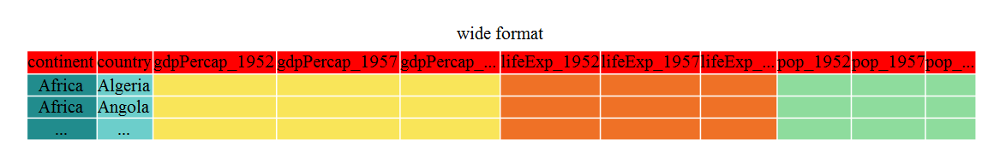

groups val
1 Con_male 105
2 CON_female 75
3 Exp_m 132
4 Exp_F 119Data Wrangling with tidyverse
Reading for Class 03
Learning objectives
At the end of this lesson you will be able to:
- Recognize and define an untidy dataset
- Recognize and convert between long and wide data formats
- Understand when to use both formats
- Pipe functions together to perform multiple commands in sequence
The problem with messy data
Most scientists are not trained to collect and organize data using tidydata principles. The results are data sets which are hard to follow, difficult to repeat, and challenging to report to journals. Understanding how to organize and store your data and analyses will make your life easier! Moreover, many journals request raw data submissions along with your manuscript. If you’ve analyzed and organized all your data in R using tidydata principles this process becomes a super simple, rather than tracking all the data across messy spreadsheets.
“Tidy datasets are all alike, but every messy dataset is messy in its own way.”
— Hadley Wickham
The principles of tidydata
- Treat your raw data as immutable.
Try to manipulate the original form of the data as little as possible. The reason is to make the whole data analysis pipeline reproducible and transparent. If you start changing fields on the data spreadsheet you can’t track where those values came from. Manipulating data with code also decreases the chances for errors being introduced to the raw data.
Each variable is a column; each column is a variable.
Each observation is a row; each row is an observation.
Each value is a cell; each cell is a single value.
For example, take the following data
Why might this data be a problem?
- combining 2 observations into one field (group and sex).
- changing the notation styles
Here’s another example
groups val2
1 CON 120_ug/ul
2 CON 121_ug/ul
3 EXP 74_ug/ul
4 EXP 91_ug/ulWhy might this data be a problem?
- the data field contains 2 values the numeric value and the units
The second step after getting your data into R is data wrangling in order to modify the data so that you can perform an analysis. Luckily R has a whole suite of tools to makes this process easy and most importantly reproducible. This less will teach you practices for effective data wrangling.
The Tidyverse

The Tidyverse which is a collection of R packages that share an underlying design, syntax, and grammer to streamline many main functions used in data science. You can install the complete tidyverse with install.packages("tidyverse"), once the package is installed you can load it using library(tidyverse).
The packages installed in tidyverse include:
dplyrandtidyrare packages for data manipulation to subset, re-arrange, and format your dataset.tibbleis a tidy way of displaying data frames that are easier to view.readris a tidy way to input or read in data into R that we covered last class.purrris a functional programming toolkit to handle looping functions.stringris a way of handling text and character strings.forcatsis a package providing tools to handle categorical variables and discrete (non-continuous) variables.lubridateis a package for working with times and dates.ggplot2is a graphic package to plot your data. We will cover this package in the next class!
Important
There are nice cheatsheets for each of the packages to demonstrate what they do in detail!
Don’t forget to check out the Help section in RStudio for any function you come across.
The BIG picture
We have now progressed to the Tidy part of the data analysis pipeline!

Examples of some not so tidy data
Have you seen or even generated data that looks like this?
example 1
example 2
example 3
some of my data!

Tidy data with tidyr
tidyr is a package with tools that help you create tidy data. tidyr functions reform the data so that other R functions can perform manipulation or analysis on it.
Wide vs Long
Wide data puts many variables for each observation in the same row. An example is a time series, where each time point for an observation is in a different column. Data in this format can be easier to data enter when the data is collected. However, it is difficult for R to then plot or evaluate across time, but we need to convert it in R.
Here is an example of wide data, you can see different metrics across time are represented across the columns for each country.

This is an example of long data. Now each value is in a single column. The next step would be to split the observation type and the year into 2 separate columns that we’ll cover below.

To convert between wide to longer we use the function pivot_longer() and to convert between long to wide we use the function pivot_wider(). The pivot_longer() function takes the main arguments data, cols, names_to, and values_to. data is the input data (the wide data frame). cols is the columns of the data you want to convert, you don’t have to use the whole data set you can only select a few columns if you want. names_to is what you want to name the header of the new variable you are creating this is often called the “key” or for example the observation type in the above example. values_to is what you want to call the actual data “value” this could be the concentration or the units of the measurement.

Lets look at an example in code!
library(tidyverse)
data <- read_csv("data/wide_data.csv")
glimpse(data) # first look at the dataRows: 10
Columns: 11
$ Dam <chr> "HFD-25-01", "HFD-25-02", "HFD-25-03", "HFD-25-04", …
$ Group <chr> "CON", "CON", "CON", "CON", "CON", "HFD", "HFD", "HF…
$ `Baseline Weight` <dbl> 21.1, 22.4, 22.4, 22.8, 22.8, 21.8, 23.0, 23.6, 22.0…
$ `Wk1 Weight` <dbl> 20.0, 20.9, 22.2, 22.4, 21.8, 23.8, 25.8, 22.7, 23.2…
$ `Wk2 Weight` <dbl> 20.0, 21.2, 22.6, 23.1, 22.5, 23.6, 26.4, 21.8, 22.7…
$ `Wk3 Weight` <dbl> 19.9, 22.2, 22.3, 22.4, 22.0, 26.2, 29.4, 24.9, 25.4…
$ `Wk4 Weight` <dbl> 20.3, 21.7, 22.3, 24.1, 21.8, 28.1, 31.6, 22.9, 26.7…
$ `Wk5 Weight` <dbl> 20.7, 22.4, 22.6, 25.0, 21.9, 27.8, 35.8, 23.8, 31.5…
$ `Wk6 Weight` <dbl> 21.4, 22.7, 23.4, 23.1, 23.4, 31.6, 34.8, 25.5, 33.8…
$ `Wk7 Weight` <dbl> 21.1, 22.0, 23.2, 24.1, 23.0, 32.0, 36.7, 28.5, 30.8…
$ `Wk8 Weight` <dbl> 21.1, 21.0, 22.0, 23.2, 22.8, 32.8, 38.2, 25.3, 33.3…You can see the weight each week but its spread across columns lets convert to long format
Using the pivot_longer() function we tell it to take columns 3 through 11 and put the column names into a new column called week and the weights into a new column called grams using this code
long.data <- data |>
pivot_longer(cols = c(3:11), names_to = "week", values_to = "grams")
glimpse(long.data) # this is what the new data looks like. Rows: 90
Columns: 4
$ Dam <chr> "HFD-25-01", "HFD-25-01", "HFD-25-01", "HFD-25-01", "HFD-25-01",…
$ Group <chr> "CON", "CON", "CON", "CON", "CON", "CON", "CON", "CON", "CON", "…
$ week <chr> "Baseline Weight", "Wk1 Weight", "Wk2 Weight", "Wk3 Weight", "Wk…
$ grams <dbl> 21.1, 20.0, 20.0, 19.9, 20.3, 20.7, 21.4, 21.1, 21.1, 22.4, 20.9…The data is separated into weeks and weight. Now we could plot it across time.
Other times we need the data to be wide format if we want to do computations on the data. For example, maybe we want to determine the percent weight change from baseline and plot that instead of the absolute weight. Lets convert it back to wide format using pivot_wider().
We tell pivot_wider() it to take the “week” column and make a new columnn for each unique value and put the value of grams in the cells as the values for each unique week column.
wide.data <- pivot_wider(long.data, names_from = week, values_from = grams)
glimpse(wide.data) # look at the data againRows: 10
Columns: 11
$ Dam <chr> "HFD-25-01", "HFD-25-02", "HFD-25-03", "HFD-25-04", …
$ Group <chr> "CON", "CON", "CON", "CON", "CON", "HFD", "HFD", "HF…
$ `Baseline Weight` <dbl> 21.1, 22.4, 22.4, 22.8, 22.8, 21.8, 23.0, 23.6, 22.0…
$ `Wk1 Weight` <dbl> 20.0, 20.9, 22.2, 22.4, 21.8, 23.8, 25.8, 22.7, 23.2…
$ `Wk2 Weight` <dbl> 20.0, 21.2, 22.6, 23.1, 22.5, 23.6, 26.4, 21.8, 22.7…
$ `Wk3 Weight` <dbl> 19.9, 22.2, 22.3, 22.4, 22.0, 26.2, 29.4, 24.9, 25.4…
$ `Wk4 Weight` <dbl> 20.3, 21.7, 22.3, 24.1, 21.8, 28.1, 31.6, 22.9, 26.7…
$ `Wk5 Weight` <dbl> 20.7, 22.4, 22.6, 25.0, 21.9, 27.8, 35.8, 23.8, 31.5…
$ `Wk6 Weight` <dbl> 21.4, 22.7, 23.4, 23.1, 23.4, 31.6, 34.8, 25.5, 33.8…
$ `Wk7 Weight` <dbl> 21.1, 22.0, 23.2, 24.1, 23.0, 32.0, 36.7, 28.5, 30.8…
$ `Wk8 Weight` <dbl> 21.1, 21.0, 22.0, 23.2, 22.8, 32.8, 38.2, 25.3, 33.3…Next, we want to calculate the percent weight gain by performing this calculation for each row Wk8 Weight/Baseline Weight * 100 to determine the percent of weight gain. This computation is done more easily if the data is in wide format.
wide.data <- wide.data |> mutate(perc.gain = `Wk8 Weight`/`Baseline Weight`*100)
glimpse(wide.data) # check it outRows: 10
Columns: 12
$ Dam <chr> "HFD-25-01", "HFD-25-02", "HFD-25-03", "HFD-25-04", …
$ Group <chr> "CON", "CON", "CON", "CON", "CON", "HFD", "HFD", "HF…
$ `Baseline Weight` <dbl> 21.1, 22.4, 22.4, 22.8, 22.8, 21.8, 23.0, 23.6, 22.0…
$ `Wk1 Weight` <dbl> 20.0, 20.9, 22.2, 22.4, 21.8, 23.8, 25.8, 22.7, 23.2…
$ `Wk2 Weight` <dbl> 20.0, 21.2, 22.6, 23.1, 22.5, 23.6, 26.4, 21.8, 22.7…
$ `Wk3 Weight` <dbl> 19.9, 22.2, 22.3, 22.4, 22.0, 26.2, 29.4, 24.9, 25.4…
$ `Wk4 Weight` <dbl> 20.3, 21.7, 22.3, 24.1, 21.8, 28.1, 31.6, 22.9, 26.7…
$ `Wk5 Weight` <dbl> 20.7, 22.4, 22.6, 25.0, 21.9, 27.8, 35.8, 23.8, 31.5…
$ `Wk6 Weight` <dbl> 21.4, 22.7, 23.4, 23.1, 23.4, 31.6, 34.8, 25.5, 33.8…
$ `Wk7 Weight` <dbl> 21.1, 22.0, 23.2, 24.1, 23.0, 32.0, 36.7, 28.5, 30.8…
$ `Wk8 Weight` <dbl> 21.1, 21.0, 22.0, 23.2, 22.8, 32.8, 38.2, 25.3, 33.3…
$ perc.gain <dbl> 100.00000, 93.75000, 98.21429, 101.75439, 100.00000,…now you can see the new column of data called perc.gain as a new column at the end. We’ll talk more about the mutate() function below.
Unite vs Separate
As we saw in countries data above sometimes we get data that has multiple pieces of data in one field. We can fix this problem with separate_wider_delim() function that will split a cell into 2 columns based on a specified delimiter. If you’ve ever used the “text to columns” feature in excel its essentially the same thing.
glimpse(data) # lets look at the countries data.Rows: 5,112
Columns: 4
$ country <fct> "Afghanistan", "Afghanistan", "Afghanistan", "Afghanistan…
$ continent <fct> Asia, Asia, Asia, Asia, Asia, Asia, Asia, Asia, Asia, Asi…
$ obstype_year <chr> "pop_1952", "lifeExp_1952", "gdpPercap_1952", "pop_1957",…
$ obs_value <dbl> 8.425333e+06, 2.880100e+01, 7.794453e+02, 9.240934e+06, 3…As you can see the “obstype_year” has too many pieces of information in it. Before we can pivot_wider(), we need to split out the observation by type and the year using the separate_wider_delim() function. We tell the function which column to split, what the names of the splits will be, and how the fields are deliminated.
dat <- separate_wider_delim(data, cols = obstype_year, names = c("obstype", "year"), delim = "_")
glimpse(dat)Rows: 5,112
Columns: 5
$ country <fct> "Afghanistan", "Afghanistan", "Afghanistan", "Afghanistan", …
$ continent <fct> Asia, Asia, Asia, Asia, Asia, Asia, Asia, Asia, Asia, Asia, …
$ obstype <chr> "pop", "lifeExp", "gdpPercap", "pop", "lifeExp", "gdpPercap"…
$ year <chr> "1952", "1952", "1952", "1957", "1957", "1957", "1962", "196…
$ obs_value <dbl> 8.425333e+06, 2.880100e+01, 7.794453e+02, 9.240934e+06, 3.03…Now the data is in a format that can be put into pivot_wider() to get out each of the observation types.
Nesting and Unnesting
Another cool function related to spliting data is a function called unnest_longer. We talked a little in the first class about a class of data called list which is very flexible on what can be put there, but you need special functions to access that data. Unnest is a way to unnest the listed items that are embedded into a dataframe. Lets look at the taylor swift data as an example.
library(taylor)
taylor <- taylor_album_songs
glimpse(taylor) # look at some dataRows: 240
Columns: 29
$ album_name <chr> "Taylor Swift", "Taylor Swift", "Taylor Swift", "T…
$ ep <lgl> FALSE, FALSE, FALSE, FALSE, FALSE, FALSE, FALSE, F…
$ album_release <date> 2006-10-24, 2006-10-24, 2006-10-24, 2006-10-24, 2…
$ track_number <int> 1, 2, 3, 4, 5, 6, 7, 8, 9, 10, 11, 12, 13, 14, 15,…
$ track_name <chr> "Tim McGraw", "Picture To Burn", "Teardrops On My …
$ artist <chr> "Taylor Swift", "Taylor Swift", "Taylor Swift", "T…
$ featuring <chr> NA, NA, NA, NA, NA, NA, NA, NA, NA, NA, NA, NA, NA…
$ bonus_track <lgl> FALSE, FALSE, FALSE, FALSE, FALSE, FALSE, FALSE, F…
$ promotional_release <date> NA, NA, NA, NA, NA, NA, NA, NA, NA, NA, NA, NA, N…
$ single_release <date> 2006-06-19, 2008-02-03, 2007-02-19, NA, NA, NA, N…
$ track_release <date> 2006-06-19, 2006-10-24, 2006-10-24, 2006-10-24, 2…
$ danceability <dbl> 0.580, 0.658, 0.621, 0.576, 0.418, 0.589, 0.479, 0…
$ energy <dbl> 0.491, 0.877, 0.417, 0.777, 0.482, 0.805, 0.578, 0…
$ key <int> 0, 7, 10, 9, 5, 5, 2, 8, 4, 2, 2, 8, 7, 4, 10, 5, …
$ loudness <dbl> -6.462, -2.098, -6.941, -2.881, -5.769, -4.055, -4…
$ mode <int> 1, 1, 1, 1, 1, 1, 1, 1, 0, 1, 1, 1, 1, 1, 1, 1, 1,…
$ speechiness <dbl> 0.0251, 0.0323, 0.0231, 0.0324, 0.0266, 0.0293, 0.…
$ acousticness <dbl> 0.57500, 0.17300, 0.28800, 0.05100, 0.21700, 0.004…
$ instrumentalness <dbl> 0.00e+00, 0.00e+00, 0.00e+00, 0.00e+00, 0.00e+00, …
$ liveness <dbl> 0.1210, 0.0962, 0.1190, 0.3200, 0.1230, 0.2400, 0.…
$ valence <dbl> 0.425, 0.821, 0.289, 0.428, 0.261, 0.591, 0.192, 0…
$ tempo <dbl> 76.009, 105.586, 99.953, 115.028, 175.558, 112.982…
$ time_signature <int> 4, 4, 4, 4, 4, 4, 4, 4, 4, 4, 4, 4, 4, 4, 4, 4, 4,…
$ duration_ms <int> 232107, 173067, 203040, 199200, 239013, 207107, 24…
$ explicit <lgl> FALSE, FALSE, FALSE, FALSE, FALSE, FALSE, FALSE, F…
$ key_name <chr> "C", "G", "A#", "A", "F", "F", "D", "G#", "E", "D"…
$ mode_name <chr> "major", "major", "major", "major", "major", "majo…
$ key_mode <chr> "C major", "G major", "A# major", "A major", "F ma…
$ lyrics <list> [<tbl_df[55 x 4]>], [<tbl_df[33 x 4]>], [<tbl_df[…If you look at the last line the lyrics is a list which is a tibble (or table) that is the all the lines of lyrics for each song. Since each line is a song and the lyrics can be many lines long its a nice way to be able to store a table inside a data frame. cool huh! If you wanted to access the lyrics you need to unnest the lyric data in the table. The function unnest_longer() does that.
lyr <- taylor |> select(album_name, track_name, lyrics) |> unnest_longer(lyrics)
dim(lyr) # the dimensions of the data number of rows and number of columns[1] 12151 3head(lyr)# A tibble: 6 × 3
album_name track_name lyrics$line $lyric $element $element_artist
<chr> <chr> <int> <chr> <chr> <chr>
1 Taylor Swift Tim McGraw 1 "He said the way… Verse 1 Taylor Swift
2 Taylor Swift Tim McGraw 2 "Put those Georg… Verse 1 Taylor Swift
3 Taylor Swift Tim McGraw 3 "I said, \"That'… Verse 1 Taylor Swift
4 Taylor Swift Tim McGraw 4 "Just a boy in a… Verse 1 Taylor Swift
5 Taylor Swift Tim McGraw 5 "That had a tend… Verse 1 Taylor Swift
6 Taylor Swift Tim McGraw 6 "On backroads at… Verse 1 Taylor Swift You can see the dataframe is much longer (12,151 rows) as each row is a lyric. If you wanted to see how many times specific words were used this is how you could do it.
Transform data with dplyr
Once the data is tidy we can do transformation and calculations for downstream analysis. You’ve already seen some of these tools in action throughout the course. We’ll formally go over them now so you’ll recognize it when you see it!
The functions we’ll use in combinations include:
select()filter()arrange()distinct()count()summarize()group_by()mutate()
Remember your pipes!
%>% & |> These allow you to link functions together
A note on style
When using pipes it is tidy style to put everything after a pipe on a new line so each line of code is noting one operation so its easier to understand. This may seem silly when you’re only doing one operation, but the standard style is for it to be on a new line.
Summary functions
select()
library(palmerpenguins)
glimpse(penguins) # lets look at the penguins dataRows: 344
Columns: 8
$ species <fct> Adelie, Adelie, Adelie, Adelie, Adelie, Adelie, Adel…
$ island <fct> Torgersen, Torgersen, Torgersen, Torgersen, Torgerse…
$ bill_length_mm <dbl> 39.1, 39.5, 40.3, NA, 36.7, 39.3, 38.9, 39.2, 34.1, …
$ bill_depth_mm <dbl> 18.7, 17.4, 18.0, NA, 19.3, 20.6, 17.8, 19.6, 18.1, …
$ flipper_length_mm <int> 181, 186, 195, NA, 193, 190, 181, 195, 193, 190, 186…
$ body_mass_g <int> 3750, 3800, 3250, NA, 3450, 3650, 3625, 4675, 3475, …
$ sex <fct> male, female, female, NA, female, male, female, male…
$ year <int> 2007, 2007, 2007, 2007, 2007, 2007, 2007, 2007, 2007…If we only want to look at the penguin body mass we can use the select() function to pull out only the data we want to see.
penguins |> select(species, island, body_mass_g) #(example, on one line of code)# A tibble: 344 × 3
species island body_mass_g
<fct> <fct> <int>
1 Adelie Torgersen 3750
2 Adelie Torgersen 3800
3 Adelie Torgersen 3250
4 Adelie Torgersen NA
5 Adelie Torgersen 3450
6 Adelie Torgersen 3650
7 Adelie Torgersen 3625
8 Adelie Torgersen 4675
9 Adelie Torgersen 3475
10 Adelie Torgersen 4250
# ℹ 334 more rowsfilter()
Next, if we want to select only certain rows that meet a specific criteria we use the filter() function to filter out only the data we want. We can combine this with select() too.
penguins |>
select(species, island, body_mass_g) |>
filter(body_mass_g > 4000)# A tibble: 172 × 3
species island body_mass_g
<fct> <fct> <int>
1 Adelie Torgersen 4675
2 Adelie Torgersen 4250
3 Adelie Torgersen 4400
4 Adelie Torgersen 4500
5 Adelie Torgersen 4200
6 Adelie Dream 4150
7 Adelie Dream 4650
8 Adelie Dream 4400
9 Adelie Dream 4600
10 Adelie Dream 4150
# ℹ 162 more rowsarrange()
arrange will re-order the data based on a specific column or columns. It we want to quickly see the lightest or heaviest penguins, for example.
# lighest
penguins |>
select(species, island, body_mass_g) |>
arrange(body_mass_g)# A tibble: 344 × 3
species island body_mass_g
<fct> <fct> <int>
1 Chinstrap Dream 2700
2 Adelie Biscoe 2850
3 Adelie Biscoe 2850
4 Adelie Biscoe 2900
5 Adelie Dream 2900
6 Adelie Torgersen 2900
7 Chinstrap Dream 2900
8 Adelie Biscoe 2925
9 Adelie Dream 2975
10 Adelie Dream 3000
# ℹ 334 more rows# heaviest using the `desc()` descending function.
penguins |>
select(species, island, body_mass_g) |>
arrange(desc(body_mass_g))# A tibble: 344 × 3
species island body_mass_g
<fct> <fct> <int>
1 Gentoo Biscoe 6300
2 Gentoo Biscoe 6050
3 Gentoo Biscoe 6000
4 Gentoo Biscoe 6000
5 Gentoo Biscoe 5950
6 Gentoo Biscoe 5950
7 Gentoo Biscoe 5850
8 Gentoo Biscoe 5850
9 Gentoo Biscoe 5850
10 Gentoo Biscoe 5800
# ℹ 334 more rowsdistinct()
distinct is a function similar to unique. It identifies the distinct or unique features across one or multiple columns
# what are the distinct islands in the data? Note it is not counting the occurances (thats a different function)
penguins |>
distinct(island)# A tibble: 3 × 1
island
<fct>
1 Torgersen
2 Biscoe
3 Dream # what are the distinct islands and species?
penguins |>
distinct(island, species)# A tibble: 5 × 2
island species
<fct> <fct>
1 Torgersen Adelie
2 Biscoe Adelie
3 Dream Adelie
4 Biscoe Gentoo
5 Dream Chinstrapcount()
count is similar to the table() function in base R. It will tally the number of times that unique variable is listed. So its similar to distinct, but it includes the count of the number of occurances.
penguins |>
count(island, species)# A tibble: 5 × 3
island species n
<fct> <fct> <int>
1 Biscoe Adelie 44
2 Biscoe Gentoo 124
3 Dream Adelie 56
4 Dream Chinstrap 68
5 Torgersen Adelie 52summarize
summarize is a powerful tool that summarizes many variables across the data. It can calculate mean, median, standard deviation, variance, sum, and many more features. It outputs a new table that includes just the summary data.
# lets look at the average mass of all the penguins
penguins |>
summarize(avg_mass = mean(body_mass_g))# A tibble: 1 × 1
avg_mass
<dbl>
1 NA# this doesn't work... why? because there are missing values! We have to add a special note to remove the NA values using the na.rm = TRUE setting. We can also look at more than one summary data at a time!
penguins |>
summarize(avg_mass = mean(body_mass_g, na.rm = TRUE),
sd = sd(body_mass_g, na.rm=TRUE))# A tibble: 1 × 2
avg_mass sd
<dbl> <dbl>
1 4202. 802.group_by
If we wanted to summarize the data across categorical variables in the data we use the group_by() function that will first group the data and then perform a summary function on each grouping.
# just running group_by() you won't see any difference, but under the hood it is sorting the observations.
penguins |>
group_by(island, species)# A tibble: 344 × 8
# Groups: island, species [5]
species island bill_length_mm bill_depth_mm flipper_length_mm body_mass_g
<fct> <fct> <dbl> <dbl> <int> <int>
1 Adelie Torgersen 39.1 18.7 181 3750
2 Adelie Torgersen 39.5 17.4 186 3800
3 Adelie Torgersen 40.3 18 195 3250
4 Adelie Torgersen NA NA NA NA
5 Adelie Torgersen 36.7 19.3 193 3450
6 Adelie Torgersen 39.3 20.6 190 3650
7 Adelie Torgersen 38.9 17.8 181 3625
8 Adelie Torgersen 39.2 19.6 195 4675
9 Adelie Torgersen 34.1 18.1 193 3475
10 Adelie Torgersen 42 20.2 190 4250
# ℹ 334 more rows
# ℹ 2 more variables: sex <fct>, year <int>penguins |>
group_by(island, species) |>
summarize(mean_mass = mean(body_mass_g, na.rm = TRUE))`summarise()` has grouped output by 'island'. You can override using the
`.groups` argument.# A tibble: 5 × 3
# Groups: island [3]
island species mean_mass
<fct> <fct> <dbl>
1 Biscoe Adelie 3710.
2 Biscoe Gentoo 5076.
3 Dream Adelie 3688.
4 Dream Chinstrap 3733.
5 Torgersen Adelie 3706.# we can also add in multiple variables for spread or count
penguins |>
group_by(island, species) |>
summarize(n=n(),
mean_mass = mean(body_mass_g, na.rm = TRUE),
sd = sd(body_mass_g, na.rm = TRUE))`summarise()` has grouped output by 'island'. You can override using the
`.groups` argument.# A tibble: 5 × 5
# Groups: island [3]
island species n mean_mass sd
<fct> <fct> <int> <dbl> <dbl>
1 Biscoe Adelie 44 3710. 488.
2 Biscoe Gentoo 124 5076. 504.
3 Dream Adelie 56 3688. 455.
4 Dream Chinstrap 68 3733. 384.
5 Torgersen Adelie 52 3706. 445.Example calculations you can run in summarize: n(), sum(),mean(), median(), min(), max(), IQR(), sd(), var()
These commands output a new table and did not modify the original data. However, sometimes you need to add a new calculation or mutate how the data is presented you can do that with the mutate function. If you paid attention above when we looked at the percent weight gain on high fat diet we used the mutate() function to add the new variable to the data.
mutate()
mutate() takes all the same functions that summarize did above. The big difference is that instead of returning a new table or a single value it returns the whole dataset with a new column.
# if we run the same command as above but with mutate instead of summarize look at how the results differ
penguins |>
group_by(island, species) |>
mutate(mean_mass = mean(body_mass_g, na.rm = TRUE)) |> glimpse()Rows: 344
Columns: 9
Groups: island, species [5]
$ species <fct> Adelie, Adelie, Adelie, Adelie, Adelie, Adelie, Adel…
$ island <fct> Torgersen, Torgersen, Torgersen, Torgersen, Torgerse…
$ bill_length_mm <dbl> 39.1, 39.5, 40.3, NA, 36.7, 39.3, 38.9, 39.2, 34.1, …
$ bill_depth_mm <dbl> 18.7, 17.4, 18.0, NA, 19.3, 20.6, 17.8, 19.6, 18.1, …
$ flipper_length_mm <int> 181, 186, 195, NA, 193, 190, 181, 195, 193, 190, 186…
$ body_mass_g <int> 3750, 3800, 3250, NA, 3450, 3650, 3625, 4675, 3475, …
$ sex <fct> male, female, female, NA, female, male, female, male…
$ year <int> 2007, 2007, 2007, 2007, 2007, 2007, 2007, 2007, 2007…
$ mean_mass <dbl> 3706.373, 3706.373, 3706.373, 3706.373, 3706.373, 37…Note the mean_mass column that has now put the mean value in every row. Be aware of the type of output you will get out of the functions you implement!!
Lets look at another example
remember our wide.data that was weight measurements of animals on a high fat diet
wide.data <- read.csv("data/wide_data.csv")
glimpse(wide.data)Rows: 10
Columns: 11
$ Dam <chr> "HFD-25-01", "HFD-25-02", "HFD-25-03", "HFD-25-04", "H…
$ Group <chr> "CON", "CON", "CON", "CON", "CON", "HFD", "HFD", "HFD"…
$ Baseline.Weight <dbl> 21.1, 22.4, 22.4, 22.8, 22.8, 21.8, 23.0, 23.6, 22.0, …
$ Wk1.Weight <dbl> 20.0, 20.9, 22.2, 22.4, 21.8, 23.8, 25.8, 22.7, 23.2, …
$ Wk2.Weight <dbl> 20.0, 21.2, 22.6, 23.1, 22.5, 23.6, 26.4, 21.8, 22.7, …
$ Wk3.Weight <dbl> 19.9, 22.2, 22.3, 22.4, 22.0, 26.2, 29.4, 24.9, 25.4, …
$ Wk4.Weight <dbl> 20.3, 21.7, 22.3, 24.1, 21.8, 28.1, 31.6, 22.9, 26.7, …
$ Wk5.Weight <dbl> 20.7, 22.4, 22.6, 25.0, 21.9, 27.8, 35.8, 23.8, 31.5, …
$ Wk6.Weight <dbl> 21.4, 22.7, 23.4, 23.1, 23.4, 31.6, 34.8, 25.5, 33.8, …
$ Wk7.Weight <dbl> 21.1, 22.0, 23.2, 24.1, 23.0, 32.0, 36.7, 28.5, 30.8, …
$ Wk8.Weight <dbl> 21.1, 21.0, 22.0, 23.2, 22.8, 32.8, 38.2, 25.3, 33.3, …# mutate is doing the calculation of percent gain for each row so the output is a unique value in each row instead of repeating the mean of a column of data.
wide.data |>
mutate(perc.gain = Wk8.Weight/Baseline.Weight*100) Dam Group Baseline.Weight Wk1.Weight Wk2.Weight Wk3.Weight Wk4.Weight
1 HFD-25-01 CON 21.1 20.0 20.0 19.9 20.3
2 HFD-25-02 CON 22.4 20.9 21.2 22.2 21.7
3 HFD-25-03 CON 22.4 22.2 22.6 22.3 22.3
4 HFD-25-04 CON 22.8 22.4 23.1 22.4 24.1
5 HFD-25-05 CON 22.8 21.8 22.5 22.0 21.8
6 HFD-25-06 HFD 21.8 23.8 23.6 26.2 28.1
7 HFD-25-07 HFD 23.0 25.8 26.4 29.4 31.6
8 HFD-25-08 HFD 23.6 22.7 21.8 24.9 22.9
9 HFD-25-09 HFD 22.0 23.2 22.7 25.4 26.7
10 HFD-25-10 HFD 21.0 22.1 22.2 24.6 23.3
Wk5.Weight Wk6.Weight Wk7.Weight Wk8.Weight perc.gain
1 20.7 21.4 21.1 21.1 100.00000
2 22.4 22.7 22.0 21.0 93.75000
3 22.6 23.4 23.2 22.0 98.21429
4 25.0 23.1 24.1 23.2 101.75439
5 21.9 23.4 23.0 22.8 100.00000
6 27.8 31.6 32.0 32.8 150.45872
7 35.8 34.8 36.7 38.2 166.08696
8 23.8 25.5 28.5 25.3 107.20339
9 31.5 33.8 30.8 33.3 151.36364
10 22.7 25.3 25.4 25.9 123.33333This is what we wanted a unique variable for every row rather than a summary data such as mean.
rename()
Another cool function is rename(). There are many ways to rename columns in R, but rename() is in the convenient tidy style. In the weight data the word “weight” is repeated over and over and in the graph it can clutter the axis. We can rename it for brevity. For rename() the function takes the format new_name = old_name. Alternatively, you can use the column number too
wide.data |> rename(baseline = Baseline.Weight,
Wk1 = 4,
Wk2 = 5,
Wk3 = 6,
Wk4 = 7,
Wk5 = 8,
Wk6 = 9,
Wk7 = 10,
Wk8 = 11) Dam Group baseline Wk1 Wk2 Wk3 Wk4 Wk5 Wk6 Wk7 Wk8
1 HFD-25-01 CON 21.1 20.0 20.0 19.9 20.3 20.7 21.4 21.1 21.1
2 HFD-25-02 CON 22.4 20.9 21.2 22.2 21.7 22.4 22.7 22.0 21.0
3 HFD-25-03 CON 22.4 22.2 22.6 22.3 22.3 22.6 23.4 23.2 22.0
4 HFD-25-04 CON 22.8 22.4 23.1 22.4 24.1 25.0 23.1 24.1 23.2
5 HFD-25-05 CON 22.8 21.8 22.5 22.0 21.8 21.9 23.4 23.0 22.8
6 HFD-25-06 HFD 21.8 23.8 23.6 26.2 28.1 27.8 31.6 32.0 32.8
7 HFD-25-07 HFD 23.0 25.8 26.4 29.4 31.6 35.8 34.8 36.7 38.2
8 HFD-25-08 HFD 23.6 22.7 21.8 24.9 22.9 23.8 25.5 28.5 25.3
9 HFD-25-09 HFD 22.0 23.2 22.7 25.4 26.7 31.5 33.8 30.8 33.3
10 HFD-25-10 HFD 21.0 22.1 22.2 24.6 23.3 22.7 25.3 25.4 25.9stringr, lubridate, forcats, purrr
These packages contain function to handle other tricky data or processes in R that we won’t cover as heavily here. I wanted to just give a few notes.
stringr
stringr is for handing text and character strings to perform operations such as
- find character strings (ie, find the work “love” in song lyrics)
- subset strings of characters (ie, extract the first or last 5 characters of a string)
- join or split charcter strings (ie, extract the year, month, and day from a date string
lubridate
lubridate is used to more easily handle dates and times. It can handle am/pm/24-h time notations, and change dates from yymmdd to mmddyy and more formats.
forcats
forcats is for working with factors and categorical data in R. Some of the functions are factoring or converting a character vector to a factor vector. Setting the levels of the factors, such as which group is the reference group. It can combine 2 sets of factors or reorder how the factors are plotted.
purrr
purrr is a powerful set of functions for performing for loops or iterations of operations across your data either row-wise or column-wise. This is commonly done in data science, but is a slighly more advanced topic. I encourage you to read about purrr and for loops in R. If we have time at the end of the course we can cover this topic.
Note
Do you learn better by listening? Check out these videos covering some of this material.
Data Wrangling this video is a little older and has some different syntax on the functions, but its all the same logic given by Garrett Grolemund himself (co-author of R for Data Science book)